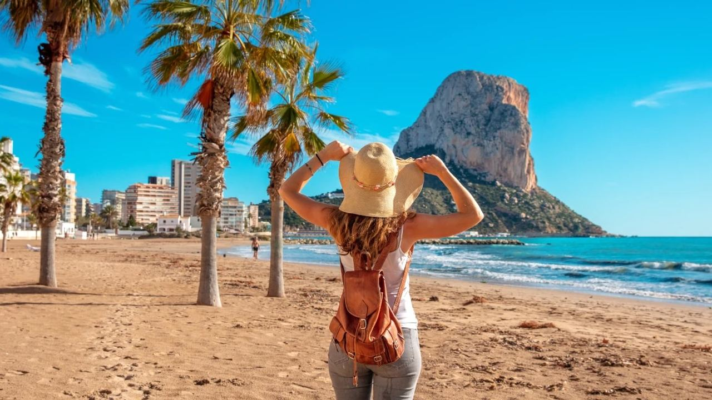
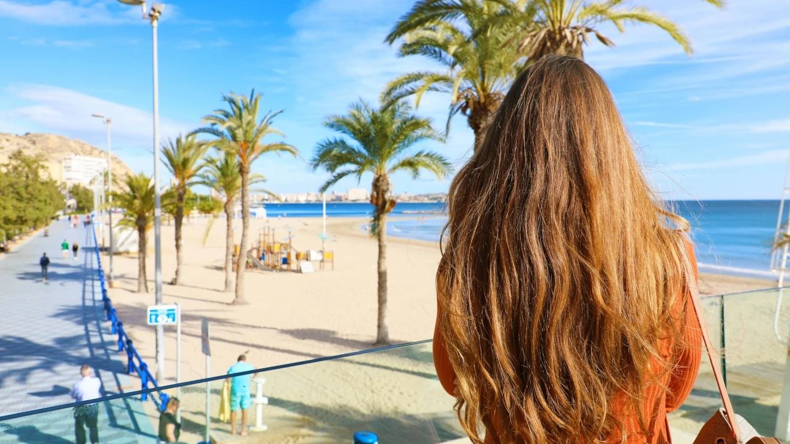
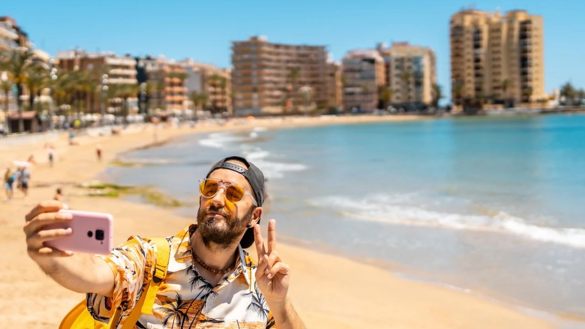
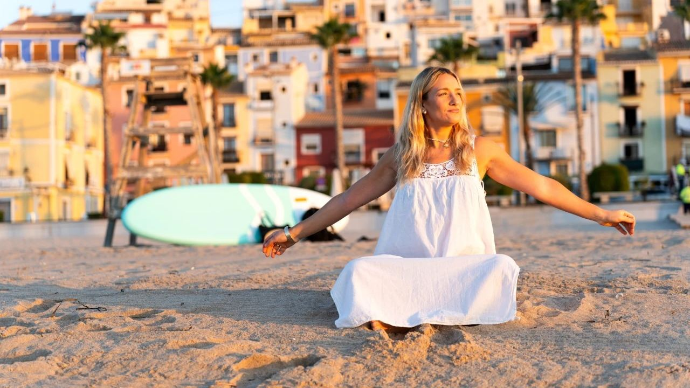
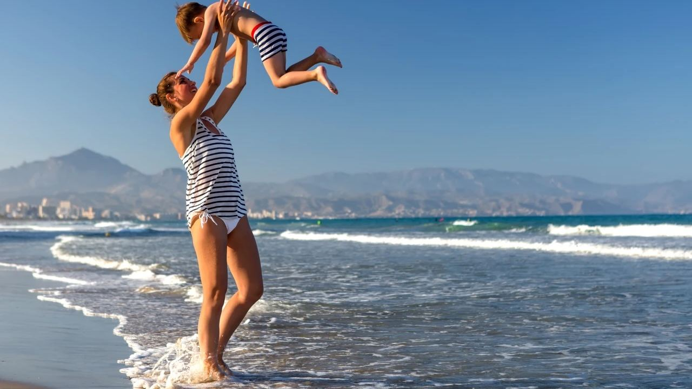

Orte · Costa Blanca
Strände der Costa Blanca, die man gesehen haben muss
 Von Lucyna Gacek · · aktualisiert · 4 Min. Lesezeit
Von Lucyna Gacek · · aktualisiert · 4 Min. Lesezeit

Kurz gesagt: Die Costa Blanca hat über 200 km Küste mit drei Arten von Stränden: lange Sandstrände mit Promenade und Rettungsschwimmern (San Juan und Postiguet in Alicante, Levante und Poniente in Benidorm, La Fossa in Calpe, El Arenal in Jávea), kleine Felsbuchten mit klarem Wasser zum Schnorcheln im Norden (Granadella, Portitxol, Moraig, La Fustera, L'Albir) und ruhige Naturstrände mit Dünen und Pinienwäldern im Süden (Guardamar, La Mata). Die Provinz Alicante hat eine der höchsten Zahlen an Stränden mit Blauer Flagge in Spanien.
Die Costa Blanca reicht von Dénia im Norden bis Pilar de la Horadada im Süden. Im Norden treffen Berge auf das Meer, und die Küste zerfällt in Klippen und Buchten. Südlich von Alicante wird sie flach, mit langen Sandstränden, Dünen und Salzseen. Bei rund 300 Sonnentagen im Jahr dauert die Badesaison hier viel länger als die Sommerferien: Viele Einheimische baden von Mai bis Oktober und spazieren den ganzen Winter am Strand.
Hier sind die Strände, die wir unseren Kunden am häufigsten empfehlen, nach Art sortiert und mit einigen praktischen Tipps.
Sandstrände für Komfort und Familien

Breite, flach abfallende Strände mit Rettungsschwimmern in der Saison, Duschen, Liegen, Strandbars und einer Promenade dahinter. Die meisten tragen die Blaue Flagge: Wasserqualität, Sicherheit und Service werden jedes Jahr geprüft.
- Playa de San Juan (Alicante) – rund 7 km feiner goldener Sand, der bis El Campello reicht. Ruhiges, flaches Wasser, ideal für Familien und beliebt zum Windsurfen und Stand-up-Paddeln.
- El Postiguet (Alicante) – der Stadtstrand unter der Burg Santa Bárbara, direkt an der Explanada und am Hafen. Perfekt für ein Bad zwischen Altstadtbummel und Mittagessen.
- La Fossa und Arenal-Bol (Calpe) – zwei Sandstrände zu beiden Seiten des Peñón de Ifach, mit flacher Promenade und gutem Zugang für Menschen mit eingeschränkter Mobilität.
- El Arenal (Jávea) – der einzige große Sandstrand von Jávea, gesäumt von Restaurants und bei Familien sehr beliebt.
Benidorm: Levante und Poniente

Die beiden großen Buchten von Benidorm gehören zu den gepflegtesten Stadtstränden Spaniens. Levante (rund 2 km) ist lebhaft, mit Bars und der Altstadt an einem Ende. Poniente (rund 3 km) ist ruhiger und breiter, mit einer modernen, preisgekrönten Promenade. Beide werden täglich gereinigt und sind in der Saison bewacht. Die kleine Bucht Mal Pas dazwischen ist geschützt und gut für Kinder.
Buchten zwischen Felsen: die Calas im Norden

Nördlich von Benidorm wird die Küste steil, und aus den Stränden werden kleine Calas: Kies- oder Sandbuchten zwischen Klippen mit sehr klarem Wasser. Hier schnorchelt man am besten an der Costa Blanca.
- Cala Granadella (Jávea) – oft zu einem der schönsten Strände Spaniens gewählt, eine Kiesbucht zwischen Pinienwäldern. Im Sommer ist die Zufahrt mit dem Auto begrenzt, also früh kommen oder den Shuttle nehmen.
- Cala Portitxol / La Barraca (Jávea) – weiße Fischerhütten, eine kleine Insel und ruhiges Wasser.
- Cala del Moraig (Benitachell) – türkisfarbenes Wasser unter hohen Klippen, mit der Meereshöhle Cova dels Arcs an einem Ende.
- Cala La Fustera (Benissa) – eine kleine, geschützte Sandbucht, gut für Familien.
- Playa del Albir (L'Alfàs del Pi) – ein langer Kiesstrand am Fuß des Naturparks Serra Gelada mit ruhiger Promenade.
Weiter südlich hat Villajoyosa einen Sandstrand vor seinen berühmten bunten Häusern.
Tipp: Badeschuhe für Kiesstrände und eine Taucherbrille einpacken, denn die Seegraswiesen (Posidonia) sind voller Fische.
Naturstrände im Süden: Dünen und Pinienwälder
Südlich von Alicante ändert sich die Landschaft. In Guardamar del Segura liegen hinter mehreren Kilometern Strand Dünen und ein vor über hundert Jahren gepflanzter Pinienwald mit schattigen Wegen zum Spazieren und Radfahren. Zwischen Torrevieja und Guardamar grenzt der Strand La Mata an den Naturpark mit seinem Salzsee. An der Orihuela Costa wechseln sich kleine Sandstrände mit Felsspitzen und einem Küstenweg ab, von Punta Prima bis Mil Palmeras.
Praktische Tipps

- Beste Zeit: Am wärmsten ist das Meer im August und September mit etwa 25–27 °C. Juni und Anfang Oktober sind warm und viel ruhiger.
- Rettungsschwimmer: Die meisten Ortsstrände sind von Juni bis September bewacht. Achten Sie auf die Flagge: Grün heißt sicher, Gelb Vorsicht, Rot Badeverbot.
- Parken: Im Juli und August vor 10 Uhr an beliebten Buchten sein oder Bus bzw. Shuttle nehmen.
- Regeln: Viele Orte verbieten im Sommer Hunde, Rauchen oder Grillen an den Hauptstränden; manche haben eigene Hundestrände. Achten Sie auf die Schilder am Eingang.
- FKK: FKK ist an spanischen Stränden erlaubt, und einige ruhigere Strände und Buchten sind als FKK-freundlich bekannt.
Häufige Fragen
Welcher ist der schönste Strand der Costa Blanca?
Das hängt vom Geschmack ab. Für Familien San Juan in Alicante, Levante und Poniente in Benidorm und La Fossa in Calpe. Für klares Wasser und Landschaft die Cala Granadella in Jávea und die Cala del Moraig in Benitachell.
Sind die Strände der Costa Blanca sandig oder felsig?
Beides. Südlich von Alicante sind sie meist lang und sandig, nördlich von Benidorm gibt es mehr Kiesstrände und Felsbuchten.
Wann kann man an der Costa Blanca baden?
Die meisten baden von Mai oder Juni bis Oktober. Am wärmsten ist das Meer im August und September mit etwa 25–27 °C.
Haben die Strände der Costa Blanca die Blaue Flagge?
Ja. Die Provinz Alicante hat eine der höchsten Zahlen an Stränden mit Blauer Flagge in Spanien. Die Liste wird jedes Jahr neu vergeben.
Wenige Minuten vom Meer leben
An der Costa Blanca können Sie jeden Tag einen anderen Strand wählen: ein kurzes Bad vor der Arbeit, eine Bucht am Wochenende, ein Strandspaziergang im Januar. Wenn Sie ein Zuhause in Strandnähe suchen, schreiben Sie uns. Wir wissen, welche Orte und Straßen zu Ihnen passen.
Quellen: Bandera Azul – ADEAC (Blue Flag Spain) · Costa Blanca Tourist Board · AEMET – Spanish weather agency